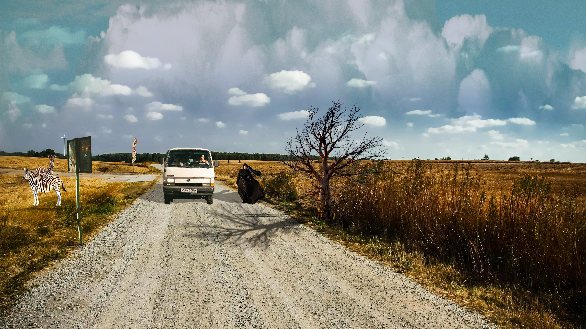

Ovdje sam naučila kako napraviti kinemagraf!
Vježba- vektorska grafika! Vježba4. Vježba 4.-sladoledOva vježba me naučila kolorirati i izrezivati!

Gif isječka videa za projektni zadatak!

Ovo je bio 2. projektni zadatak u kojem sam koristila razne tehnike kao što su magnetic lasso, postavljanje sjena, izrezivanja itd.
Na ovoj vježbi sam se namučila, ali sam uspješno koristila sve tehnike kao i u 2. projektnom zadatku!
Vježba 9. me naučila kako urediti video i dodavati zvuk!